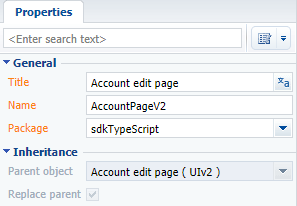

Файловый контент позволяет использовать при разработке клиентской функциональности компилируемые в JavaScript языки, например, TypeScript. Подробнее о TypeScript можно узнать на сайте https://www.typescriptlang.org.
Установка TypeScript
Одним из способов установки инструментария TypeScript является использование менеджера пакетов NPM для Node.js. Для этого необходимо выполнить в консоли Windows следующую команду:
Исходный код
Пакет с реализацией примера можно скачать по ссылке.
Алгоритм реализации примера
1. Перейти в режим разработки в файловой системе
2. Создать структуру хранения файлового контента
Общий принцип создания рекомендуемой структуры хранения файлового контента:
- В выгруженном в файловую систему пользовательском пакете создайте каталог Files.
- В каталог Files добавьте папку src, а внутри нее создайте подкаталог js.
- В каталог Files добавьте файл descriptor.json.
- В каталог Files\src\js добавьте файл bootstrap.js.
3. Реализовать класс валидации значения на языке TypeScript
В каталоге Files\src\js создайте файл Validation.ts, в котором объявите интерфейс StringValidator.
В этом же каталоге создайте файл LettersOnlyValidator.ts. Объявите в нем класс LettersOnlyValidator, реализующий интерфейс StringValidator.
4. Выполнить компиляцию исходных кодов TypeScript в исходные коды JavaScript
Для настройки компиляции добавьте в каталог Files\src\js конфигурационный файл tsconfig.json.
В консоли Windows перейдите в каталог Files\src\js и выполните команду tsc.
В результате выполнения компиляции в каталоге Files\src\js будут созданы JavaScript-версии файлов Validation.ts и LettersOnlyValidator.ts, а также *.map-файлы, облегчающие отладку в браузере.
Содержимое файла LettersOnlyValidator.js, который будет использоваться в Creatio, получено автоматически.
5. Выполнить генерацию вспомогательных файлов
Для генерации вспомогательных файлов _FileContentBootstraps.js и FileContentDescriptors.js выполните следующие действия:
- Перейдите в раздел Конфигурация (Configuration).
- Выполните загрузку пакетов из файловой системы (действие Обновить пакеты из файловой системы (Update packages from file system)).
- Выполните компиляцию приложения (действие Компилировать все (Compile all items)).
6. Использовать валидатор в схеме Creatio
В разделе Конфигурация (Configuration):
- Выполните загрузку пакетов из файловой системы (действие Обновить пакеты из файловой системы (Update packages from file system)).
- Cоздайте замещающую схему страницы редактирования записи контрагента.

- Выполните выгрузку пакетов в файловую систему (действие Выгрузить пакеты в файловую систему (Download packages to file system)).
- В файловой системе измените файл ..\sdkTypeScript\Schemas\AccountPageV2\AccountPageV2.js.
После сохранения файла с исходным кодом схемы и обновления страницы приложения на странице редактирования контрагента при сохранении записи будет выполняться валидация и отображаться соответствующее предупреждение.